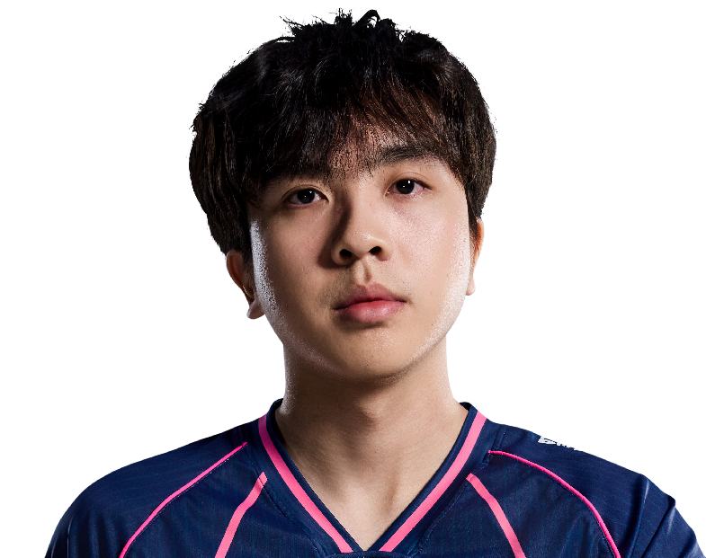

Bilibili Gaming / 闫帅博
FT.
ALL IN. EVERY ROUND.ViperFT / 闫帅博
FT / BLG
ONE NAME.EVERY ROUND.ALL IN.
闫帅博，Bilibili Gaming。
从每次选下英雄，到每次站上赛场。
FT / 人物与赛场档案MOMENTS
MOMENTS
THAT MATTER.

官方肖像 / 英雄原画 / 比赛档案
FT / 职业英雄池
DIFFERENT AGENTS.
SAME PLAYER.
从最熟悉的英雄，看到每一种打法。蝰蛇
Viper.
54% 全英雄使用占比
35职业出场地图
175.3平均战斗评分 ACS
0.97击杀 / 死亡 K:D
453总击杀
43首杀
VLR 全时期职业数据 · 2026-11-02 快照 · 出场单位为地图，使用占比不是胜率。查看原始统计 ↗
FT / 比赛记录ONE PLAYER.
ONE PLAYER.
EVERY ROUND.
65职业地图
886总击杀
0.94全英雄 K/D
CN EVO 26: Act 3 Ro16
BLG / XLG2 : 0+
VCT 26: CN Stage 2 Playoffs ⋅
LBF
BLG / TYL0 : 3+
VCT 26: CN Stage 2 Playoffs ⋅
UBF
BLG / JDG0 : 2+
VCT 26: CN Stage 2 Playoffs ⋅
UBSF
BLG / XLG2 : 1+
VCT 26: CN Stage 2 Playoffs ⋅
UBQF
BLG / TE2 : 1+
最近已收录系列赛；生涯总计由全英雄表求和，K/D 为总击杀除以总死亡。

下一位 / BLG 阵容